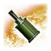

Дорогостоящий, бронированный, мощный отряд. Вооружены ППШ-41, что делает их смертоносными в ближнем бою. Единственная пехота в игре имеющая бронежилеты.
Из-за высокой численности и бронежилетов у отряда крайне высокая живучесть. Имеют в наличии дымовые гранаты, что позволяет им атаковать пулеметные расчеты в лоб. Осколочная граната не такая мощная как у панцергренадеров, но взрывается гораздо быстрее и не дает много времени сопернику, чтоб среагировать на бросок. Эффективна против скоплений пехоты, отрядов в зданиях и расчетов.
В ближнем бою перестреливают любой немецкий отряд за считанные секунды, но не неспособны воевать против легкой техники и танков.
Хорошо добивают раненные, отступающие войска, выбегая на линию отступления и сопровождая их огнем в движении.
Сравнение с подобными отрядами
Штурмовые саперы (Западный вермахт):
Уровень опасности: Низкий
Штурмовые саперы не имеют шансов на близкой дистанции ввиду меньшего количества бойцов в отряде и худшего бронирования. Также StG-44 менее эффективна на ближней дистанции. Один в один лучше даже не вступать в бой.
Штурмовые гренадеры (Восточный вермахт):
Уровень опасности: Низкий
Штурмовые гренадеры имеют на одного бойца меньше, но к середине игры могут быть улучшены до 6 бойцов в отряде. Даже обладая равным количеством бойцов, шансов перестрелять в открытом бою у гренадеров мало. Единственная надежда на удачно броненные гранаты, но не стоит забывать, что Штурмовая пехота всегда находится в движении и сама кидает гранату, которая взрывается еще быстрее. Поэтому умнее не ввязываться в бой.
Панцергренадеры (Восточный вермахт):
Уровень опасности: Низкий
Панцергренадеры не смогут перестрелять Штурмовую пехоту ввиду меньшего количества бойцов в отряде и худшей эффективности StG-44 на ближней дистации в сравнении с ППШ-41. Есть шанс взорвать отряд мощной гранатой. Но это дело случае и расчитывать на такой исход в открытом бою не стоит. Лучше сразу отступить.
Способности
Требуется Доступно для командиров |
||
|---|---|---|
|
 30
|
Осколочная граната РГ-42
Осколочная граната РГ-42 простая граната с мощной сотрясающей силой и большим радиусом осколка; способен уничтожать скопления пехоты.
|
|
|
15
|
Дымовая граната РГД-1
Дымовая граната РГД-1 выбрасывает густое серое облако дыма, которое заслоняет линию видимости.
|
|
|
Пистолет-пулемет ППШ-41
|
6
|
Доступно для командиров


Ветеранство

- уменьшается время перезарядки всех способностей
- уменьшается стоимость гранаты RGD-1

- уменьшается время перезарядки оружия
- уменьшается точность стрельбы вражеских юнитов по отряду

- увеличивается точность стрельбы
- увеличивается дальность броска гранаты RG-42